Index
Apple
Audio e Video
Games e Consoles
Computadores e Perifericos
Foto e Video
Iluminacao e Setup
Casa e Cozinha
Moveis e Decoracao
Organizacao e Escritorio
Saude e Beleza
Esportes e Fitness
Colecionaveis e Hobby
Instrumentos e Medicao
Acessorios Mobile e Energia
Wearables e Relogios
Gadgets e Gravacao
Moda e Acessorios
Ultimo dia (das 9h30 ate 12h30)
Todos os preços são negociáveis !
⬆️ Teclado Mecânico Retrô Yunzii QL75 (Estilo Máquina de Escrever)
Modelo: QL75 Estado: Excelente
Destaques:
Design transparente com estética de máquina de escrever retrô.
Layout 75% compacto com knob de volume.
Conectividade Tri-mode: Bluetooth 5.1, Wireless 2.4Ghz e Cabo USB-C.
Iluminação RGB ajustável.
Links: Site do Fabricante
Preço original: ~ R$ 850
À Venda por: ~R$ 550
⬆️ Monitores de Áudio Edifier M60 (Branco)
Modelo: M60 Estado: Excelente
Destaques:
Sistema 2.0 compacto com 66W RMS de potência.
Certificação Hi-Res Audio e Hi-Res Wireless (LDAC).
Conectividade Tri-mode: Bluetooth 5.3, USB-C e AUX.
Painel de controle touch capacitivo e suporte via app EDIFIER ConneX.
Links: Site do Fabricante
Preço original: ~ R$ 1.500
À Venda por: ~R$ 1.000
⬆️ Light Bar para Monitor Baseus i-wok 2
Photo 1
Modelo: i-wok Series 2 Estado: Excelente
Destaques:
Iluminação assimétrica para reduzir reflexos na tela e cansaço visual.
Ajuste de brilho e temperatura de cor (frio, neutro, quente).
Fixação por gravidade, compatível com monitores de diferentes espessuras.
Alimentação USB-C.
Links: Site do Fabricante
Preço original: ~ R$ 280
À Venda por: ~R$ 160
⬆️ Balança Digital de Alta Precisão
Modelo: Bolida Estado: Excelente (Na caixa)
Destaques:
Precisão de 0,01g para medições detalhadas.
Display LCD retroiluminado azul de fácil leitura.
Funções de tara e contagem de peças (PCS).
Tampa protetora transparente integrada.
Preço original: ~ R$ 80
À Venda por: ~R$ 45
⬆️ Cadeira Presidente Ergonômica Yamasoro (Branca)
Modelo: Presidente High-back Estado: Excelente
Destaques:
Revestimento em couro sintético premium com padrão diamante.
Design ergonômico com encosto alto e apoio de cabeça integrado.
Braços articulados e ajuste de inclinação.
Base cromada robusta com rodinhas de alta resistência.
Links: Amazon
Preço original: R$ 1.699,99
À Venda por: ~R$ 1.100
⬆️ Cadeira Decorativa Wingback Capitonê (Pink/Veludo)
Modelo: Poltrona Wingback Estado: Excelente
Destaques:
Revestimento em veludo rosa pink com botões estilo capitonê.
Pés palito em madeira, proporcionando um toque retrô/chic.
Encosto alto e confortável, ideal para leitura ou decoração de quartos.
Acabamento detalhado com tachas/cristais decorativos.
Preço original: ~ R$ 650
À Venda por: ~R$ 400
⬆️ Smart TV Portátil LG StanbyME 27"
Modelo: 27ART10AKPL Estado: Excelente
Destaques:
Tela de 27" touch com rotação (horizontal e vertical).
Base com rodinhas escondidas (fácil de levar para qualquer cômodo).
Bateria interna (funciona sem fios por até 3 horas).
Conectividade NFC e espelhamento de celular.
Links: Site do Fabricante
Preço original: ~ R$ 6.800
À Venda por: ~R$ 4.200
⬆️ Tábua de Corte DOMEZ (Dupla Face)
Modelo: Corte Gourmet Estado: Excelente
Destaques:
Material resistente with acabamento texturizado que imita pedra.
Canaleta para retenção de líquidos.
Alça integrada para transporte e armazenamento suspenso.
Fácil limpeza e alta durabilidade.
Links: Amazon
Preço original: R$ 90,00
À Venda por: ~R$ 70
⬆️ XP-Pen Wireless Shortcut Remote (Atalhos)
Photo 1
Modelo: ACK05 Estado: Excelente
Destaques:
10 teclas totalmente personalizáveis e Dial programável.
Conectividade Bluetooth 5.0, Wireless 2.4G e USB-C.
Design compacto e ergonômico, ideal para artistas e editores.
Compatível com diversas marcas de tablets e softwares.
Links: Site do Fabricante
Preço original: ~ R$ 300 (Importado)
À Venda por: ~R$ 180
⬆️ Coleção de Relógios (Curren, ChilliBeans, etc)
Photo 1
Modelo: Diversos Estado: Bom/Excelente
Destaques:
Variedade de estilos (Analógicos, Cronógrafos).
Marcas como Curren, ChilliBeans.
Venda do lote ou unidades individuais.
À Venda por: A Combinar
⬆️ Smartwatch Huawei Watch GT 5 (46mm)
Photo 1
Modelo: GT 5 (VLI-B19) Estado: Excelente
Destaques:
Design octogonal esportivo com pulseira azul.
Monitoramento avançado de saúde e esportes (TruSense).
Bateria de longa duração (até 14 dias).
Compatível com iOS e Android.
Links: Site do Fabricante
Preço original: R$ 1.519,30
À Venda por: ~R$ 1.100
⬆️ Apple Magic Trackpad (Branco - USB-C)
Photo 1
Modelo: MK2D3AM/A Estado: Excelente (Na caixa)
Destaques:
Superfície de vidro ampla com sensores Force Touch.
Bateria recarregável integrada.
Design fino e elegante, perfil baixo.
Links: Site do Fabricante | Mercado Livre
Preço original: ~ R$ 1.000
À Venda por: ~R$ 700
⬆️ Apple AirPods Max (Sky Blue)
Photo 1
Modelo: A2096 Estado: Excelente
Destaques:
Áudio de alta fidelidade com Cancelamento Ativo de Ruído.
Modo Ambiente e Áudio Espacial.
Design over-ear com arco em tecido telado respirável.
Cor Azul Céu.
Links: Site do Fabricante
Preço original: R$ 6.590,00
À Venda por: ~R$ 4.500
⬆️ iMac 24" M3 (Azul) + Hub USB (Combo)
Photo 2
Modelo: iMac M3 (2023) Estado: Excelente
Destaques:
Chip M3, 8GB RAM, SSD 512GB (Upgrade).
Teclado Magic Keyboard com Touch ID.
Incluso: Hub USB-C (Combo 2 em 1).Tela Retina 4.5K imersiva e câmera FaceTime HD 1080p.
Cor Azul vibrante.
Links: Site do Fabricante | Hub (Amazon)
Preço original: ~ R$ 13.500+ (Com acessórios)
À Venda por: ~R$ 9.000
⬆️ iMac 21.5 (Modelo 2017)
Photo 2
Modelo: iMac 2017 Estado: Excelente
Destaques:
Processador Intel (Modelo 2017).
8GB RAM.
SSD 480GB (Upgrade).
Design clássico em alumínio e vidro.
Links: Site do Fabricante
Preço original: ~ R$ 16.000 (Na época)
À Venda por: ~R$ 2.900
Photo 1
Modelo: AirTag Estado: Excelente
Destaques:
Rastreamento preciso via rede “Buscar” (Find My) da Apple.
Alto-falante integrado para emitir som.
Resistente à água e poeira (IP67).
Bateria substituível (CR2032).
Links: Site do Fabricante | Mercado Livre
Preço original: ~ R$ 375 (cada) / ~ R$ 1.100 (os 3)
À Venda por: ~R$ 750
⬆️ Gravador de Voz IA Plaud Note
Photo 1
Modelo: Plaud Note Estado: Excelente (Na caixa)
Destaques:
Gravação inteligente com suporte a ChatGPT para transcrição e resumo.
Design ultrafino compatível com MagSafe (fixa no iPhone).
64GB de armazenamento interno.
Modos de gravação duplos: Reunião (ar) e Chamada (condução óssea/vibração).
Links: Site do Fabricante | Amazon
Preço original: R$ 1.278,90
À Venda por: ~R$ 900
⬆️ AirPods Pro (3ª Geração) - USB-C
Photo 1
Modelo: AirPods Pro 3 (2025) Estado: Excelente (Lacrado/Novo)
Destaques:
Novo Chip H3 com processamento de áudio avançado.
Cancelamento Ativo de Ruído (ANC) 2x mais potente que a geração anterior.
Sensores de saúde integrados: Monitoramento de frequência cardíaca e atividades.
Design refinado, mais compacto e ergonômico.
Resistência IP57 a poeira, água e suor.
Estojo MagSafe com entrada USB-C e alto-falante para busca.
Links: Site do Fabricante
Preço original: ~ R$ 2.599
À Venda por: ~R$ 1.900
⬆️ AirPods Pro (2ª Geração)
Photo 1
Modelo: AirPods Pro 2 Estado: Excelente
Destaques:
Qualidade de som H2 superior.
Cancelamento de ruído e Modo Ambiente.
Pontas de silicone em vários tamanhos para ajuste ideal.
Integração perfeita com ecossistema Apple.
Links: Site do Fabricante | Mercado Livre
Preço original: ~ R$ 1.800
À Venda por: ~R$ 1.200
⬆️ Boné de LED Capellux (Tratamento Capilar)
Modelo: Boné Capellux Estado: Excelente (Na caixa/estojo)
Destaques:
Dispositivo de fototerapia para tratamento de queda de cabelo e melhora da saúde capilar.
Combinação de LEDs e lasers de baixa intensidade.
Inclui estojo de transporte premium, fonte de alimentação e massageador de couro cabeludo.
Recomendado para uso doméstico diário.
Links: Site do Fabricante
Preço original: ~ R$ 1.500
À Venda por: ~R$ 950
⬆️ Kit de Halteres de Ferro Revestidos (10kg e 15kg)
Photo 1
Modelo: Halteres Bola (Vinil/PVC) Estado: Excelente
Destaques:
Revestimento emborrachado/vinil de alta resistência.
Design ergonômico em formato de bola para exercícios de impacto e força.
Kit robusto com 2 pares: um par de 10kg e um par de 15kg (Total 50kg).
Ideal para treinos intensos de musculação e crossfit em casa.
Preço original: ~ R$ 850 (Total pelos dois pares de peso elevado)
À Venda por: ~R$ 550
⬆️ Máquina de Alongamento de Pernas (Leg Stretch Machine)
Photo 1
Modelo: B0DGSRYFHC Estado: Excelente
Destaques:
Ajuste manual via volante para abertura gradual e segura.
Construção robusta em aço com estofamento confortável (Preto/Vermelho).
Ideal para atletas, dançarinos e praticantes de artes marciais.
Melhora a flexibilidade e amplitude de movimento de forma controlada.
Links: Amazon
Preço original: R$ 1.299,99
À Venda por: ~R$ 850
⬆️ Esteira Elétrica Residencial Plana (Até 12km/h)
Photo 1
Modelo: H55 (220V) Estado: Excelente
Destaques:
Velocidade ajustável até 12km/h.
Design ultra fino e compacto, fácil de guardar sob móveis ou encostada.
Painel digital integrado para monitoramento de tempo, velocidade, distância e calorias.
Braço de apoio para maior estabilidade durante o exercício. Preço original: R$ 2.299,00
À Venda por: ~R$ 1.500
⬆️ Garrafa Filtro Portátil Stone Water
Photo 1
Modelo: Stone Water (Verde) Estado: Excelente (Na caixa)
Destaques:
Sistema de filtragem avançado que elimina 99,9% de bactérias, protozoários e microplásticos.
Filtra cloro, metais pesados e melhora o gosto da água.
Vida útil do filtro de até 1.500 litros (aprox. 1 ano de uso).
Inclui capa térmica e seringa para limpeza do filtro.
Ideal para trilhas, viagens e uso diário com água de fontes diversas.
Links: Site do Fabricante
Preço original: ~ R$ 380
À Venda por: ~R$ 250
⬆️ Garrafa Térmica NRMEI 5L
Photo 1
Modelo: NRMEI 5L (Preta/Vermelha) Estado: Excelente
Destaques:
Grande capacidade de 5 litros, ideal para manter bebidas geladas por horas (Tererê, sucos, água).
Isolamento térmico em poliuretano (PU) para máxima conservação de temperatura.
Design prático com alça dupla para transporte seguro e facilidade ao servir.
Bico dosador ergonômico que evita respingos e facilita o controle do fluxo.
Preço original: ~ R$ 459
À Venda por: ~R$ 230
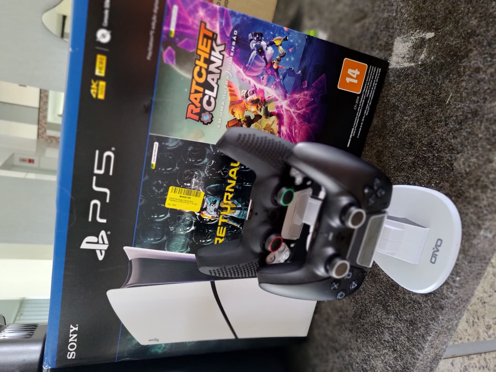Photo 1
Modelo: PS5 Slim Digital Estado: Excelente (Na caixa)
Destaques:
Modelo Slim com 1TB de SSD e design compacto.
Versão Digital Edition (sem leitor de discos).
Inclui códigos para os jogos Ratchet & Clank: Em Uma Outra Dimensão e Returnal (nao usados).
Combo completo: Acompanha controle extra Midnight Black e base de carregamento duplo OIVO com indicadores LED.
Links: PlayStation Brasil | OIVO Design
Preço original: ~ R$ 5.100 (Combo)
À Venda por: ~R$ 3.200
⬆️ Suporte de Leitura Ajustável em Madeira e Alumínio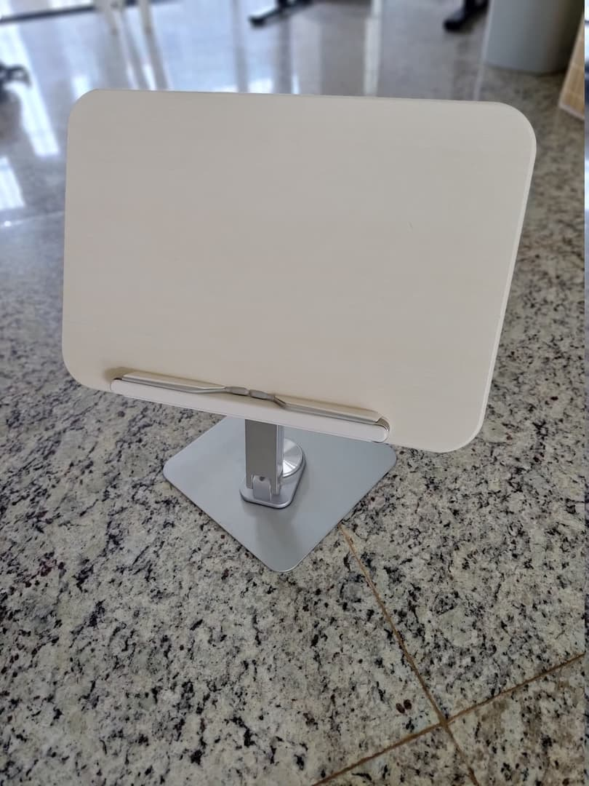 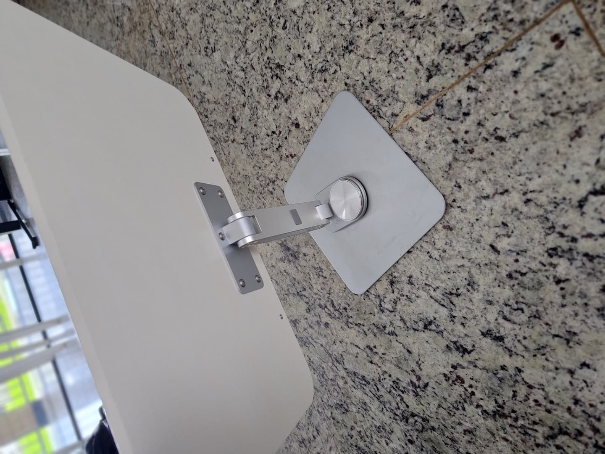
Modelo: Aclouddate Articulado Estado: Excelente
Destaques:
Base em madeira maciça premium com braço articulado em alumínio escovado.
Ajuste total de altura, inclinação e rotação para máxima ergonomia.
Prendedores de página ajustáveis que não danificam o livro.
Ideal para livros pesados, tablets ou notebooks leves.
Links: Produto Similar (Amazon)
Preço original: ~ R$ 450
À Venda por: ~R$ 280
⬆️ Carregador de Baterias Nitecore Digicharger D4
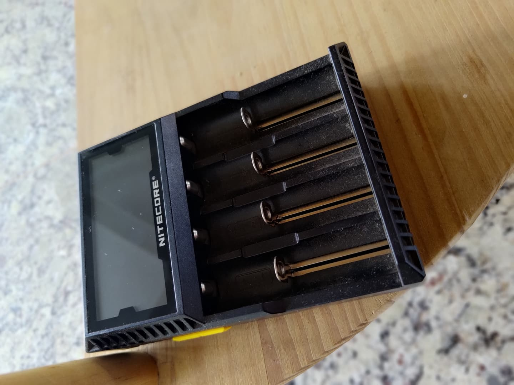Photo 1
Modelo: Digicharger D4 Estado: Excelente
Destaques:
Carregamento simultâneo de até 4 baterias.
Compatível com baterias Li-ion, Ni-MH e Ni-Cd.
Painel LCD integrado que exibe o progresso de carregamento, voltagem e corrente.
Detecção automática do tipo de bateria e status.
Links: Site do Fabricante
Preço original: ~ R$ 350
À Venda por: ~R$ 220
⬆️ Escova Elétrica Oral-B iO Series 9 (Preta)
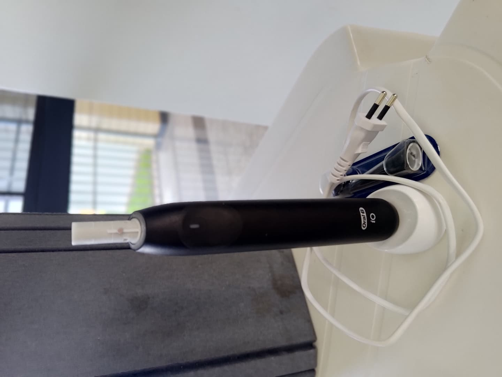Photo 1
Modelo: iO Series 9 Estado: Excelente
Destaques:
Tecnologia iO: combina a icônica cabeça redonda da Oral-B com microvibrações suaves.
Display interativo colorido: fornece orientações em tempo real e saudações personalizadas.
7 modos inteligentes: Limpeza Diária, Sensível, Cuidados com a Gengiva, Limpeza Intensa, Branqueamento, Super Sensível e Limpeza de Língua.
Sensor de pressão inteligente: acende em vermelho, branco ou verde para indicar se você está aplicando a pressão ideal.
Carregador magnético rápido e estojo de viagem premium.
Links: Site do Fabricante
Preço original: R$ 245,76
À Venda por: ~R$ 90
⬆️ Ventilador de Mesa Philco Mega Turbo 40
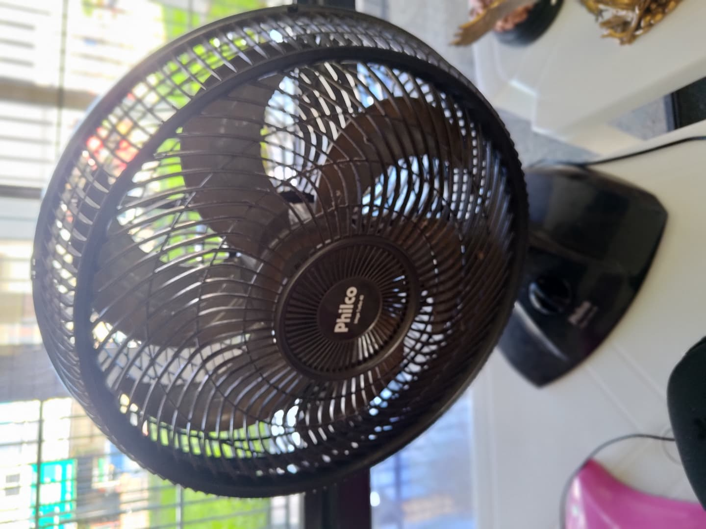Photo 1
Modelo: Mega Turbo 40 Estado: Excelente
Destaques:
Hélice de 40cm com 6 pás, garantindo alto fluxo de ar.
3 velocidades ajustáveis para diferentes necessidades.
Sistema de oscilação horizontal automática e inclinação vertical regulável.
Grade plástica removível que facilita a limpeza e manutenção.
Links: Site do Fabricante
Preço original: ~ R$ 250
À Venda por: ~R$ 140
⬆️ Óculos de Áudio JBL Soundgear Frames
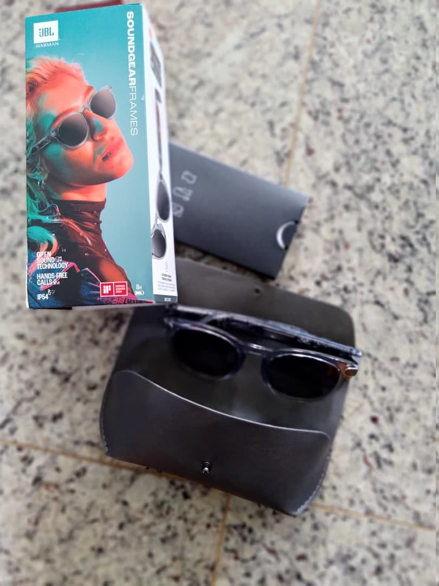Photo 1
Modelo: Soundgear Frames Estado: Excelente (Na caixa)
Destaques:
Tecnologia JBL OpenSound: Áudio imersivo sem isolar os sons do ambiente.
Chamadas Hands-free: Microfones integrados para conversas nítidas e comandos de voz.
Bateria de Longa Duração: Até 8 horas de reprodução com carregamento rápido.
Resistência IP54: Proteção contra suor e respingos de água, ideal para uso diário.
Design Elegante e Confortável: Estilo clássico com acabamento premium e estojo incluso.
Links: Site do Fabricante
Preço original: ~ R$ 800
À Venda por: ~R$ 500
⬆️ Miniaturas de Navios de Cruzeiro MSC (Seaview & Preziosa)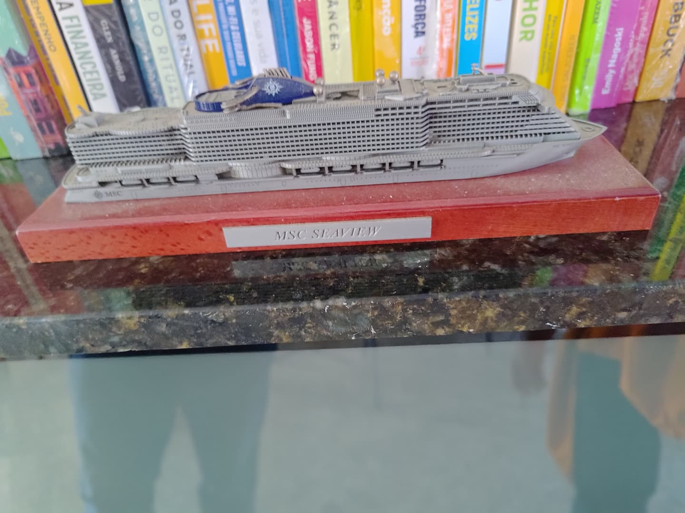 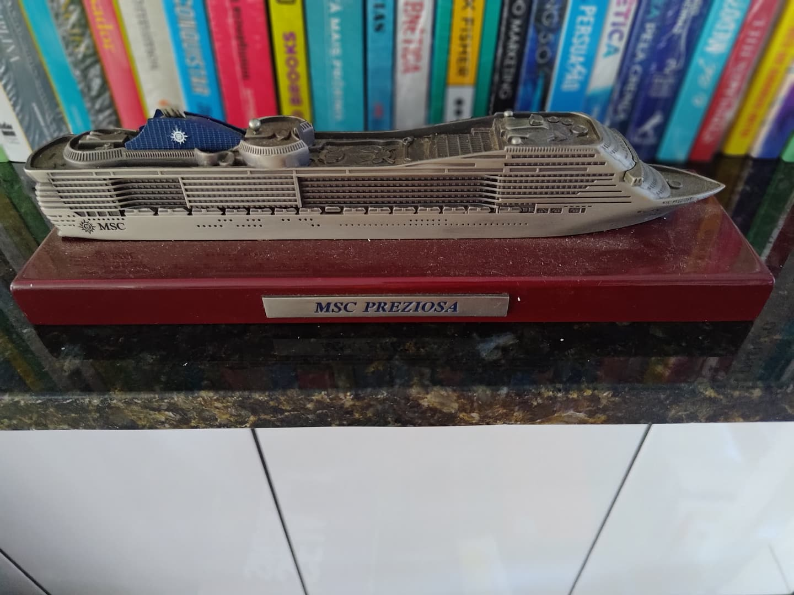
Modelos: MSC Seaview e MSC Preziosa Estado: Excelente (em base de madeira)
Destaques:
Réplicas detalhadas dos famosos navios de cruzeiro da MSC.
Fixados em base de madeira elegante com identificação do modelo.
Peças decorativas ideais para entusiastas de viagens e modelismo.
À Venda por: ~R$ 50 (Cada)
⬆️ Coleção de Bonés (Nacional/Senna, Superman, BSB City)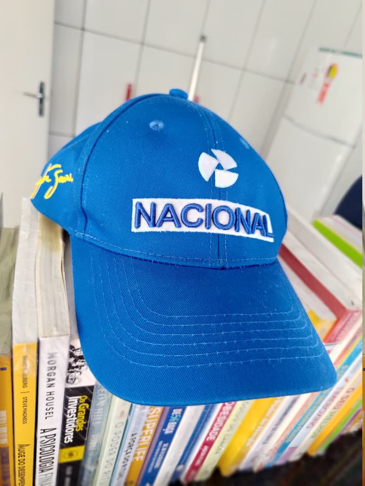 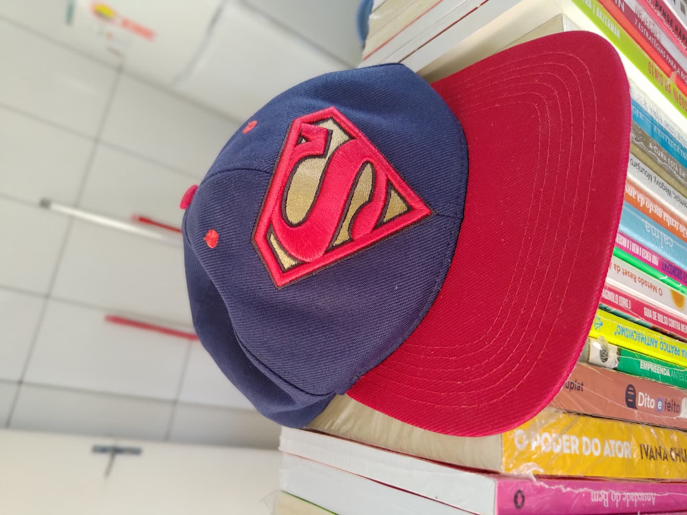 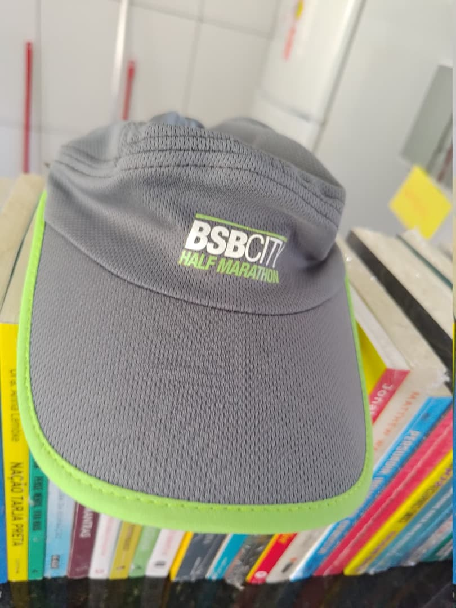
Modelos: Nacional (Ayrton Senna), Superman (DC), BSB City Half Marathon Estado: Excelente/Novos
Destaques:
Nacional: Réplica icônica do boné usado por Ayrton Senna.Superman: Design clássico com logo bordado.BSB City: Boné esportivo de alta performance (meia maratona).
À Venda por: ~R$ 50 (Cada)
⬆️ Óculos de Grau Chilli Beans (Armação Preta)
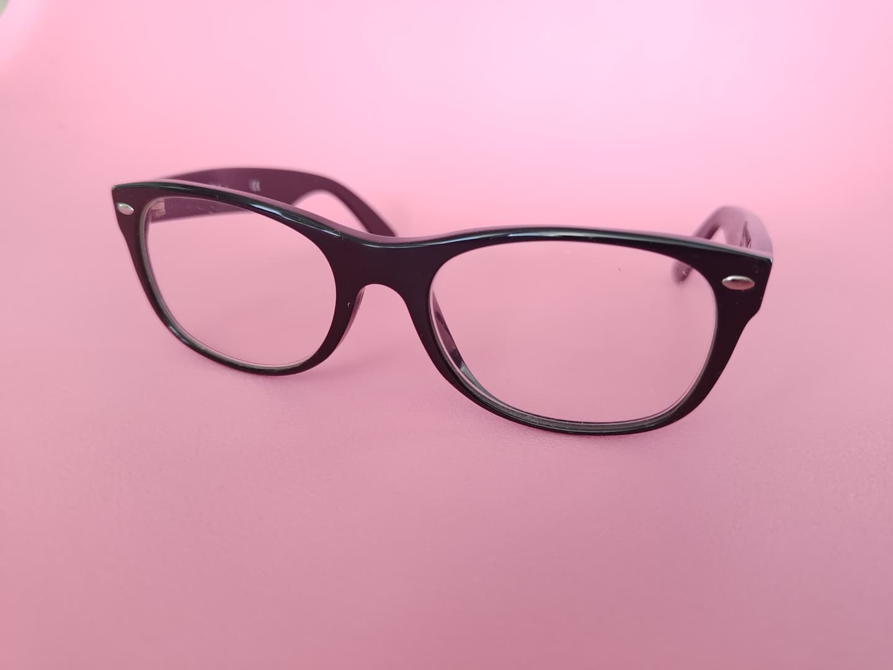Photo 1
Marca: Chilli Beans Estado: Excelente
Destaques:
Armação estilosa em acetato preto.
Design moderno e confortável.
(Necessário trocar as lentes para sua graduação).
À Venda por: ~R$ 100
⬆️ Tela de Monitor Selfie Vlog SmallRig
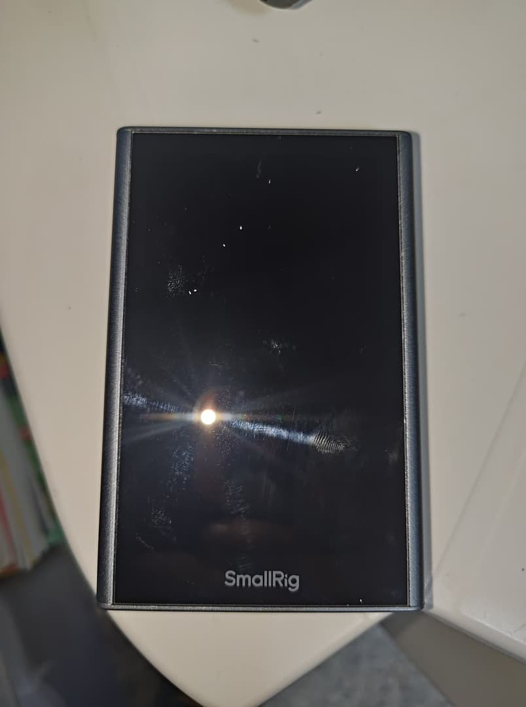Photo 1
Estado: Excelente
Destaques:
Permite usar a câmera traseira do celular para vlogs e selfies com visualização em tempo real.
Suporte magnético compatível com MagSafe.
Inclui controle remoto sem fio para disparos.
Design compacto e leve.
Links: Amazon
Preço original: R$ 391,38
À Venda por: ~R$ 250
⬆️ Termômetro e Higrômetro Digital Compacto
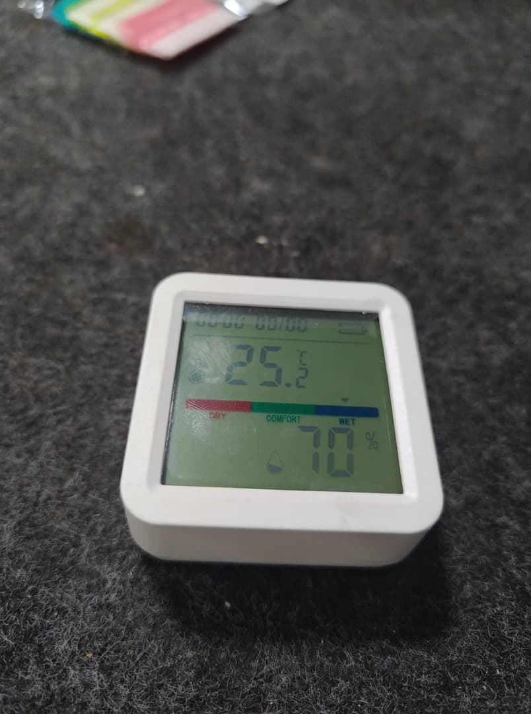Photo 1
Estado: Excelente
Destaques:
Monitoramento em tempo real de temperatura e umidade.
Display LCD de fácil leitura com indicadores de conforto (Dry/Comfort/Wet).
Design minimalista em branco.
Alimentação por bateria de longa duração.
Preço original: ~ R$ 30
À Venda por: ~R$ 20
⬆️ Fun-Tech Lab 1:64 Windsible Desktop Wind Tunnel
Photo 1
Modelo: Windsible Estado: Excelente
Destaques:
Túnel de vento de mesa para miniaturas 1:64 (Hot Wheels, etc).
Sistema de fumaça para visualização aerodinâmica.
Controle de velocidade do vento e iluminação.
Peça de exibição única para colecionadores.
Links: Site do Fabricante
Preço original: ~ R$ 1.400 (Importado, US$ 239)
À Venda por: ~R$ 900
⬆️ Runsible - Dinamômetro para Miniaturas 1:64
Photo 1
Modelo: Runsible 64 Estado: Excelente
Destaques:
Rolling road (esteira) para miniaturas escala 1:64 (Hot Wheels, Matchbox).
Controle de velocidade rotativo e função start-stop.
Base ajustável para diferentes entre-eixos (30mm+).
Alimentação via USB-C, ideal para exibir carros “em movimento”.
Links: Site do Fabricante
Preço original: ~ R$ 400 (Importado)
À Venda por: ~R$ 250
⬆️ E muito mais…Além dos itens listados aqui, temos uma coleção enorme de livros (principalmente não-ficção e autoajuda) e diversos outros objetos que ainda não foram catalogados.
Se você estiver procurando por algo específico ou quiser vir dar uma olhada no acervo completo, entre em contato. Há muito mais para descobrir!
Localização para Retirada
Edifício Porto Seguro
QE 18, Bloco 1, Apartamento 111
Guará I, Brasília - DF
CEP: 71015-095
Obrigado por apoiar nossa família neste momento.